What are some common task blocks?
The data must first be prepared (via ETL or extract/transform/load jobs).
Training and making predictions requires appropriate compute resources.
Data read and write imply access to an external service (such as a database) or storage (such as AWS S3).
And these jobs may need to run periodically so as to get the latest data from logging systems/data lakes.
Some example of batch pipelines are:
We will build a pipeline such that it is built from scratch every-time to generate predictions.
Our sub-tasks are as follows:
We will be training a recommendation engine for movie recommendation using the lightfm package. In particular, we will follow the example here.
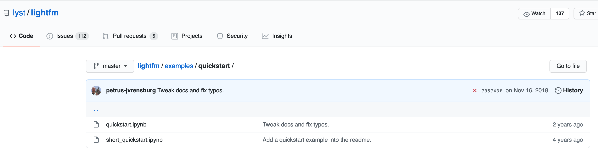
Lets clone the repository and start a local jupyter notebook server to have a look at the notebook. For cloning we use the following:
(datasci-dev) ttmac:pipelines theja$ git clone https://github.com/lyst/lightfm.git
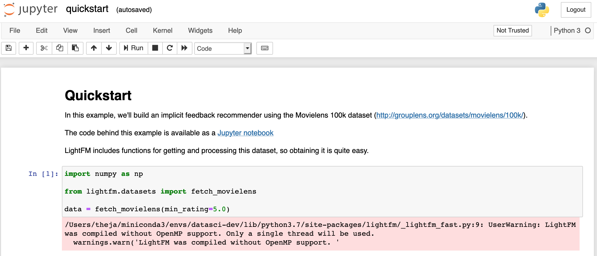
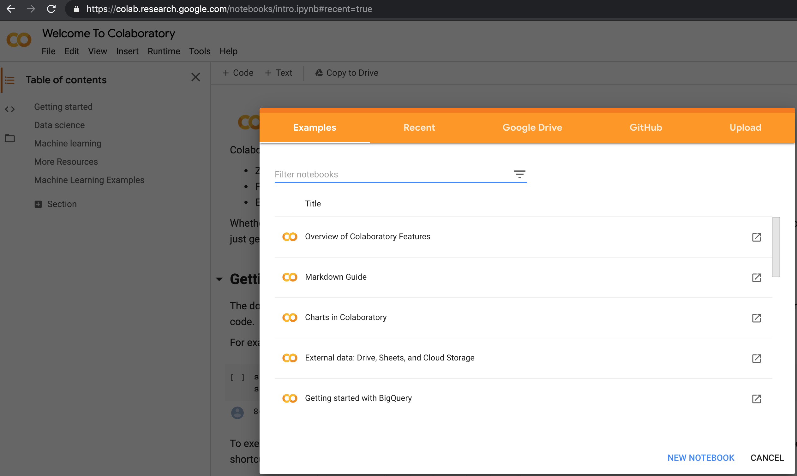
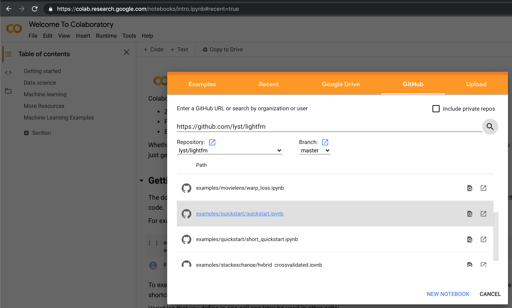
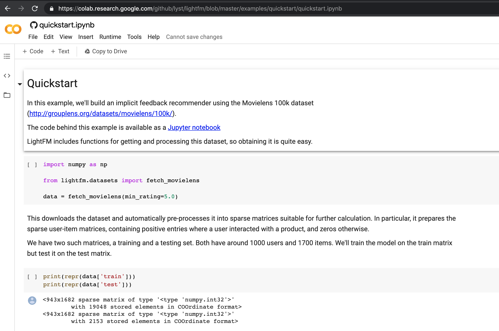
file->save a copy in drive). You can also turn on GPU option (not needed for this notebook) by navigating to runtime-> change runtime type as shown below.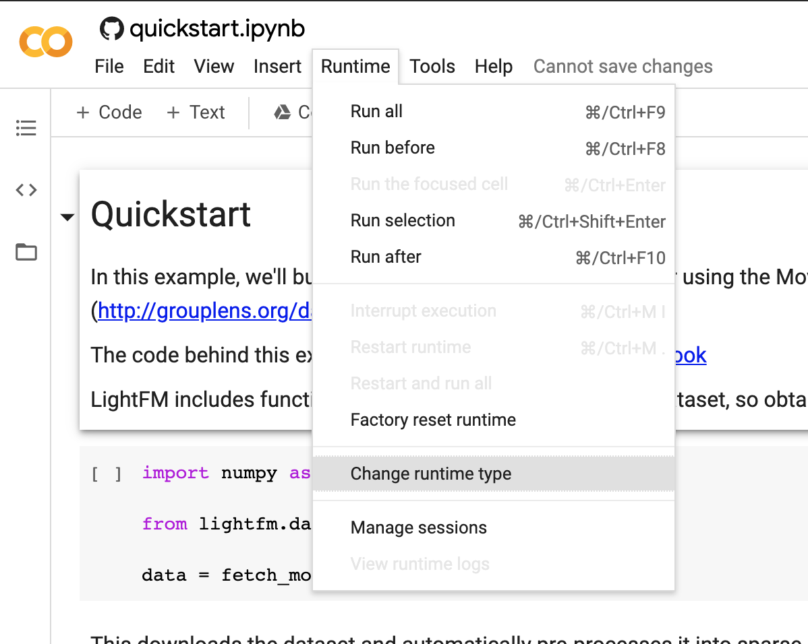
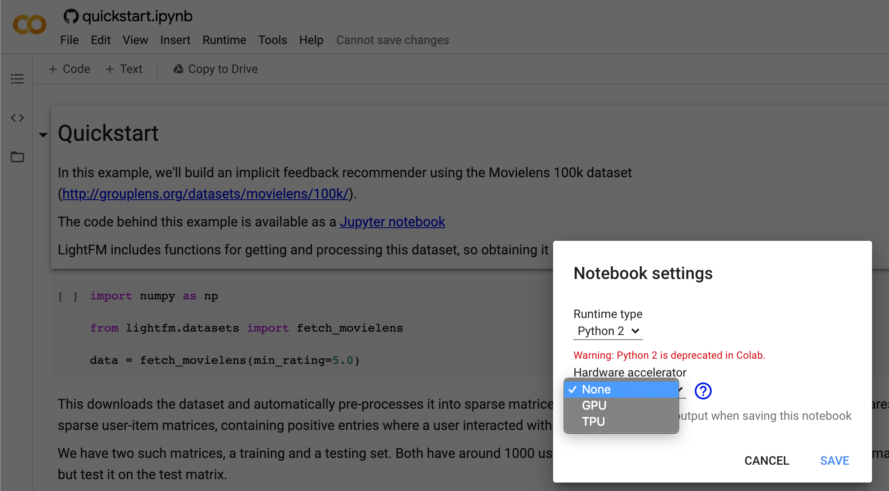
Lets come back to our local jupyter notebook. We can actually execute the notebook by running the following command. See https://github.com/jupyter/nbconvert/issues/515 for more information on the command line arguments used here.
(datasci-dev) ttmac:pipelines theja$ cd lightfm/examples/quickstart/
(datasci-dev) ttmac:quickstart theja$ jupyter nbconvert --to notebook --ExecutePreprocessor.kernel_name=python3 --inplace --execute quickstart.ipynb
[NbConvertApp] Converting notebook quickstart.ipynb to notebook
[NbConvertApp] Executing notebook with kernel: python3
[NbConvertApp] Writing 8387 bytes to quickstart.ipynb
We will slightly modify the quickstart notebook to delineate the four steps and add the BigQuery export code.
We will install one additional package called pandas_gbq from https://pandas-gbq.readthedocs.io/en/latest/ to upload our predictions to Google’s BigQuery managed service (can act like an application database).
(datasci-dev) ttmac:quickstart theja$ conda install pandas-gbq --channel conda-forge
Collecting package metadata (current_repodata.json): done
Solving environment: done
.
.
(truncated)
.
.
oauthlib-3.0.1 | 82 KB | ############################################################################################################ | 100%
Preparing transaction: done
Verifying transaction: done
Executing transaction: done
(Aside) To do a quick check if you are authenticated, execute the following commands in the terminal (don’t forget to set the environment variable using export GOOGLE_APPLICATION_CREDENTIALS=/Users/theja/model-user.json beforehand):
(datasci-dev) ttmac:pipelines theja$ gcloud auth list
Credentialed Accounts
ACTIVE ACCOUNT
* *****@gmail.com
To set the active account, run:
$ gcloud config set account `ACCOUNT`
(datasci-dev) ttmac:pipelines theja$ gcloud config list project
[core]
project = authentic-realm-276822
Your active configuration is: [default]
(Aside) You may need to do a downgrade of a package using the command conda install google-cloud-core==1.3.0 in case you are seeing errors such as
AttributeError: 'ClientOptions' object has no attribute 'scopes'
Once we run all cells of the notebook, we have essentially pushed a pandas dataframe of predictions to Google BigQuery. The dataframe itself looks like the following:
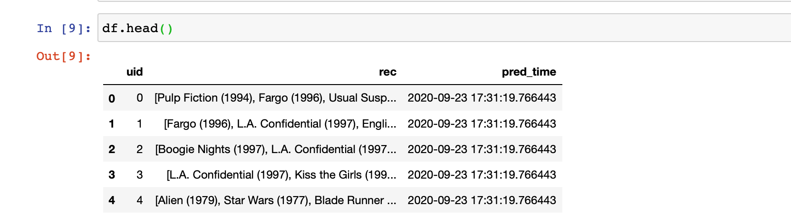
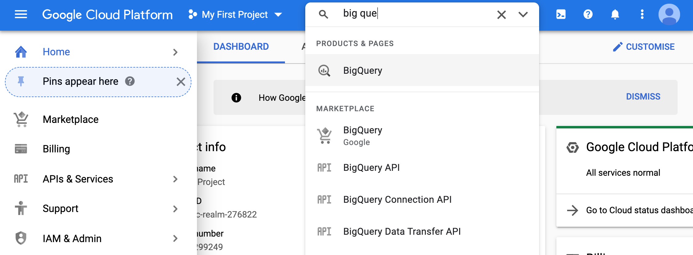
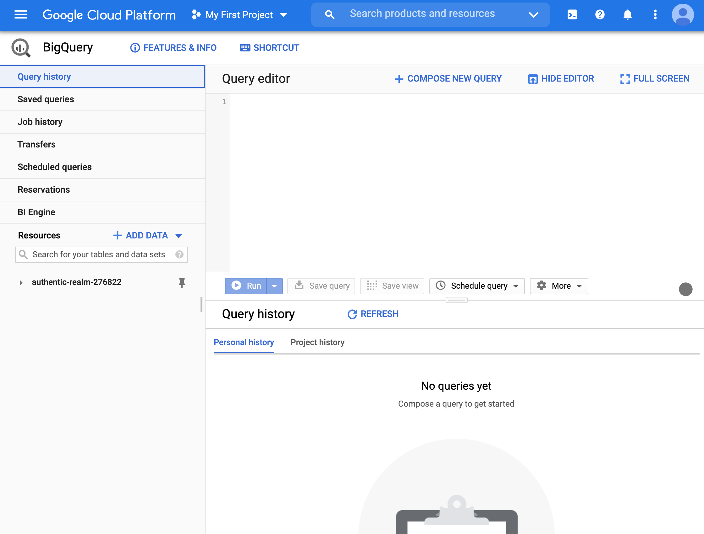
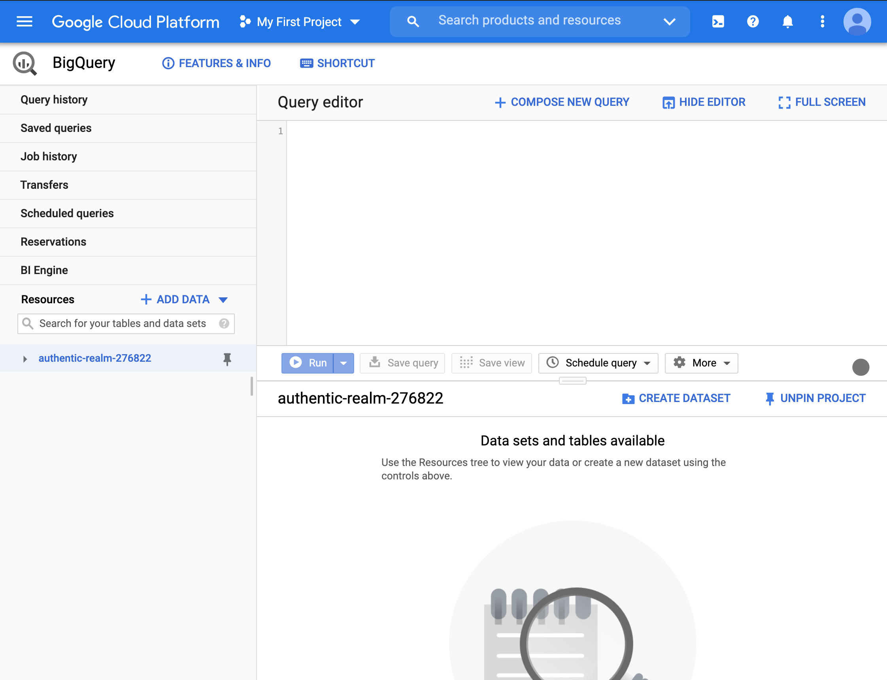
movie_recommendation_service database and then to the predicted_movies table. The default information is the schema.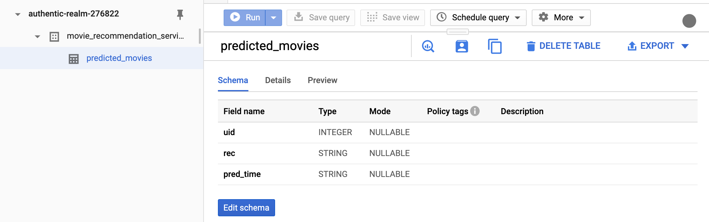
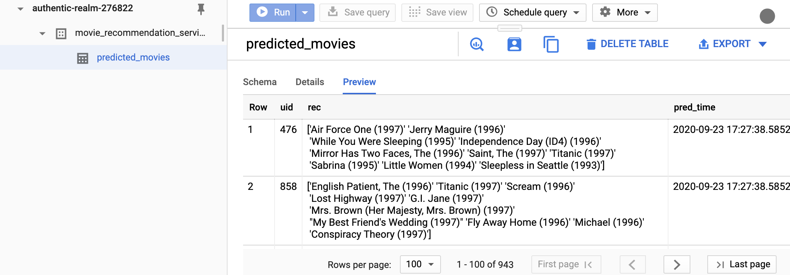
Lets rerun the notebook from the commandline. I am assuming that the model-user.json is in the current directory for simplicity. This way, we don’t have to set the environment variable GOOGLE_APPLICATION_CREDENTIALS.
(datasci-dev) ttmac:pipelines theja$ jupyter nbconvert --to notebook --ExecutePreprocessor.kernel_name=python3 --inplace --execute recommend_lightfm.ipynb
[NbConvertApp] Converting notebook recommend_lightfm.ipynb to notebook
[NbConvertApp] Executing notebook with kernel: python3
[NbConvertApp] Writing 11592 bytes to recommend_lightfm.ipynb
Going back to the BigQuery interface, the only thing that has changed is the timestamp when the predictions were generated (previewed results may not retrieve the same user-ids).
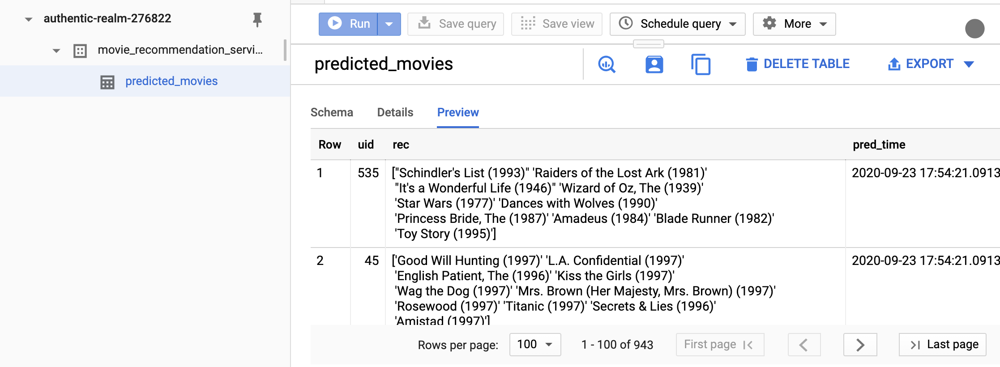
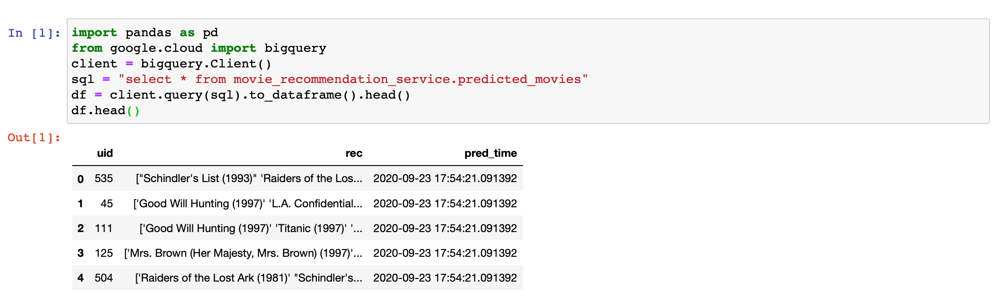
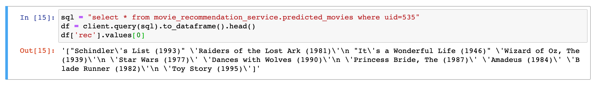
While we did all four blocks in a single script, it makes sense to break it into 4 blocks (fetch data, train, predict, send predictions to database service). This, way a block can retry its execution if the previous block fails and is manually handled by a team member. In particular, this retry can be automated using scheduling tools. One such tool is cron, which is the subject of the next section.
For simplicity we will containerize the four blocks of this transient model pipeline into a single container and script (i.e., retain the above). Our next tool will allow us to run it automatically in a periodic manner.